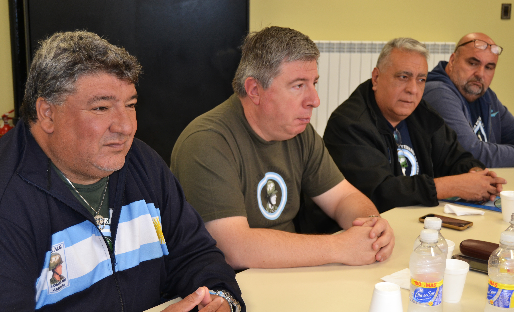

A 40 años de la guerra de Malvinas te contamos la historia del soldado Guillermo Aliaga. Los días finales de la guerra estaban marcados por combates día y noche, y las órdenes eran repeler cualquier tipo de intento de desembarco o aproximación británica. Pese a los esfuerzos, finalmente las posiciones se perdieron y cientos de soldados argentinos fueron tomados como prisioneros en suelo malvinense. En los campos de concentración la “BBC” realizaba filmaciones de los combatientes argentinos, y entre las imágenes se rescata la foto de un joven militar del Ejército Argentino que recorrió el mundo haciendo alusión a la corta edad de los soldados Argentinos. En este capítulo se conoce la historia del “soldado de la foto”, de tan solo 20 años, recientemente egresado del Colegio Militar de la Nación, y que tiene como primer destino el acopiamiento de las islas, su imagen herido por el impacto de una bala en el cuello, recorre el mundo con las noticias del conflicto bélico entre Inglaterra y la Argentina.
El teniente Ernesto Espinosa cubrió a sus compañeros para que pudieran salir de un refugio en llamas. Su cuerpo nunca se encontró. 40 años después de la batalla, en los alrededores de la Top Malo House, los viejos compañeros de “Erni” Espinosa, caído a los 25 años, se siguen preguntando qué pasó con él. O más bien, qué pasó con sus restos. El 2 de abril se cumplen 40 años del desembarco de las tropas argentinas en las Islas Malvinas
